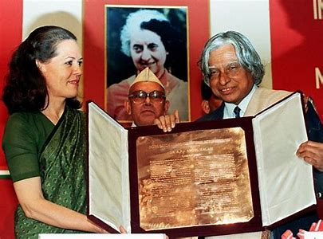
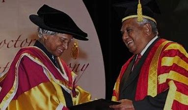
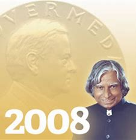
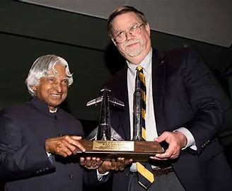

Awards and Honors
National Awards
Padma Bhushan (1981)
India's third-highest civilian award for distinguished service in any field.

Padma Vibhushan (1990)
India's second-highest civilian award for exceptional and distinguished service in any field.

Bharat Ratna (1997)
India's highest civilian award for exceptional service and achievement in any field.

Indira Gandhi Award for National Integration (1997)
Recognizes outstanding contributions to national integration and communal harmony.

Veer Savarkar Award (1998)
Recognizes outstanding contributions to social reform and national unity.
International Awards
King Charles II Medal for Science and Technology (2007)
Awarded by the Royal Society of London for outstanding contributions to science and technology.

Hoover Medal (2008)
Awarded by the American Society of Mechanical Engineers for outstanding public service.

Honorary Doctorates from 36 Universities
Recognizing significant contributions to various fields.
Other Awards
Ramanujan Award (1980)
Awarded by the Aeronautical Society of India
Aryabhatta Award (1990)
Awarded by the Aeronautical Society of India
Dr. Biren Roy Space Science Award (1996)
Awarded by the Indian National Science Academy
WINGS Award (1997)
Awarded by the World Aerospace Laureates Association
International von Kármán Wings Award (2009)
Awarded by the California Institute of Technology